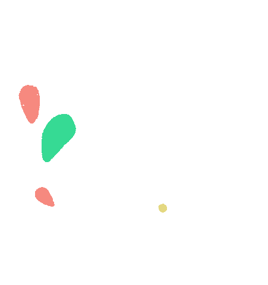

<ng-container>
    <div *ngIf="isLoading" class="loading backg-charcoal80">
        
    </div>
    <div id="visor-navigation">
        <app-visor-menu></app-visor-menu>
        <app-visor-selector
                [componentes]="componentes"
                [idMuseo]="idMuseo"
                [hasComponentes]="hasComponentes"
                (componenteUpdate)="getComponente($event)"
                (componenteShow)="showComponent($event)"></app-visor-selector>
        <nav *ngIf="isModel || isVideo || isImage" class="buttons navbar p-3">
            <button type="button" class="btn circle btn-dark float-left mr-3" (click)="collapse.toggle()" [attr.aria-expanded]="!isCollapsed"
                    aria-controls="collapseExample">
                <span class="mdi mdi-information"></span>
            </button>
        </nav>
        <!--nav class="buttons navbar p-3">
            <button class="btn circle btn-dark float-left mr-3">
                <span class="mdi mdi-play-pause"></span>
            </button>
        </nav-->
    </div>
    <ng-container class="component-display" *ngIf="isModel">
        <a-scene embedded style="z-index: -1" embedded arjs vr-mode-ui="enabled: false">
            <a-marker id="marker" preset='hiro'>
                <a-entity
                id="objeto"
                position="0 0 0"
                scale="0.5 0.5 0.5"
                gltf-model=""
                foo
                ></a-entity>
              </a-marker>
              <a-entity camera></a-entity>
        </a-scene>
    </ng-container>
    <ng-container class="component-display" *ngIf="isVideo">
        <a-scene embedded style="z-index: -1" embedded vr-mode-ui="enabled: false"
        artoolkit='sourceType: webcam; detectionMode: mono; maxDetectionRate: 30; canvasWidth:240; canvasHeight:180'>
            <a-assets>
                <video id="vid" src="" autoplay="true" loop="true"></video>
            </a-assets>
            <a-marker preset="hiro" vidhandler>
                <a-plane id="planeVid" position='1 2 0' scale="2 2 2" width="2" rotation="-90 0 0" 
                material='transparent:true; opacity: 0.7; src:#vid'></a-plane>
            </a-marker>
            <a-entity camera></a-entity>
        </a-scene>
    </ng-container>
    <ng-container class="component-display" *ngIf="isImage">
        <a-scene embedded arjs vr-mode-ui="enabled: false">
            <a-assets>
                
            </a-assets>
            <a-marker preset='hiro'>
                <a-image width="1" height="1" src="#transpImage" rotation="-90 0 0" ></a-image>
            </a-marker>
            <a-entity camera></a-entity>
        </a-scene>
    </ng-container>
    <footer id="visor-footer">
        <ngb-alert *ngIf="!idMuseo || idMuseo == 0" #selfClosingAlert class="msg-error p-2 col-11 mx-auto" type="custom" [dismissible]="true">No se encontró ningún museo cerca de su localidad. Sus coordenadas son {{latitude}}, {{longitude}}</ngb-alert>
        <ngb-alert *ngIf="idMuseo && idMuseo != 0" #selfClosingAlert class="msg-ok p-2 col-11 mx-auto" type="custom" [dismissible]="true">Museo detectado, bienvenido a {{nombreMuseo}}</ngb-alert>
        <div #collapse="ngbCollapse" [(ngbCollapse)]="isCollapsed">
            <div class="visor-footer-info row p-0">
                <div class="row col my-auto p-3">
                    <p *ngIf="isModel" class="font-sm m-0">
                        Acciones disponibles:
                        <span *ngIf="resize" class="mdi mdi-resize px-1"></span>
                        <!--span class="mdi mdi-cursor-move px-1"></span-->
                        <span *ngIf="rotate" class="mdi mdi-rotate-3d px-1"></span>
                    </p>
                </div>
                <button class="btn btn-trans col-2 px-0 text-center text-white"
                        (click)="collapse.toggle()">
                    <span class="mdi mdi-lg mdi-close-thick"></span>
                </button>
                <div id="target-info" class="p-3 text-center row">
                    <p class="col-4 p-0 my-auto">Marcador:</p>
                    
                </div>
                <div *ngIf="componentDescription" id="component-info" class="p-3 bt-flash-dotted">
                    <p>{{componentDescription}}</p>
                </div>
            </div>
        </div>
    </footer>
</ng-container>
<router-outlet></router-outlet>
